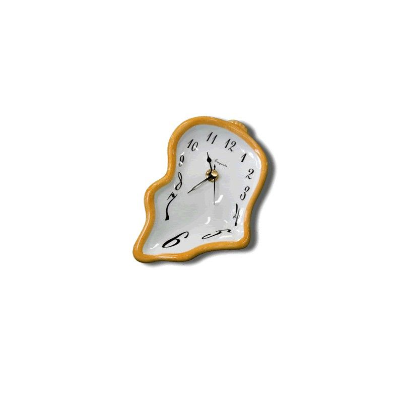

Chắc hẳn ai trong chúng ta cũng từng có một mối tình khắc cốt ghi tâm mang tên “mối tình đầu" đúng không? Nhưng với tôi mối tình thứ 2 mới gợi lên tôi nhiêu điều, có đẹp đẽ hay không? Hay chỉ là một mối tình đáng để quên đi? Mà dù cho có quên nhưng khi có ai nhắc đến, khóe môi lại bất giác mỉm cười, tim bất chợt cũng lệch mất đi một nhịp.
Tôi cũng từng có mối tình như thế. Cái cảm giác lần đầu biết nhớ, lần đầu biết trông, lần đầu biết chờ đợi và lo lắng, thật sự rất kì diệu. Bạn có từng vì một người mà ngày đêm suy nghĩ, tưởng tượng ra hàng nghìn hàng vạn thứ “sau này" không? Tôi thì có đấy nhé! Tôi và người ấy sẽ yêu nhau thật lâu, cùng nhau đón Valentine thật lãng mạn, cùng nhau tổ chức sinh nhật, cùng nhau đón giao thừa… Với cái đứa thật sự mới biết yêu thì đâu cần điều gì quá cao sang, chỉ cần một mối tình đơn giản, "trong sáng" và "thuần khiết" mà thôi.
Đã hơn 1 năm sau khi kết thúc mối tính đó, tới tận hôm nay tôi vẫn có cảm giác tội lỗi bởi vì tôi quá vô tâm hay chỉ là mình quá tốt bụng?
Chia tay là một trải nghiệm đau đớn. Khi chúng ta chia tay một người quan trọng trong đời, như người yêu, bạn bè hoặc người thân, chúng ta có thể trải qua sự đau khổ và buồn bã kéo dài trong một thời gian dài. Cảm giác mất mát và sự thiếu vắng có thể làm cho chúng ta cảm thấy cô đơn và khó chịu.
Sau khi chia tay, sự thiếu vắng trở thành một phần của cuộc sống hàng ngày. Mọi thứ xung quanh chúng ta đều nhắc nhở về người mà chúng ta đã chia tay. Những kỷ niệm, những nơi chúng ta đã cùng nhau trải qua và những hoạt động chúng ta đã thường xuyên làm cùng nhau bây giờ trở thành những khoảng trống. Sự thiếu vắng này có thể khiến chúng ta cảm thấy cô đơn và trống rỗng.
Dù đau đớn, chia tay cũng mang lại cơ hội để học hỏi và trưởng thành. Trải qua những trải nghiệm khó khăn này có thể giúp chúng ta hiểu rõ hơn về bản thân, những gì chúng ta mong muốn và những gì chúng ta không muốn trong mối quan hệ. Chúng ta có thể học cách tự yêu thương và chăm sóc bản thân, đồng thời khám phá những mặt mới của cuộc sống và tạo ra những mối quan hệ mới và lành mạnh. Dù cảm giác chia tay trong một năm có thể rất khó khăn, nhưng chúng ta không nên quên rằng thời gian sẽ giúp chúng ta trở nên mạnh mẽ hơn. Mỗi trải nghiệm đau khổ cũng mang lại cơ hội để chúng ta trưởng thành và tìm thấy niềm vui trong cuộc sống mới. Hãy tin tưởng rằng bạn có thể vượt qua mọi khó khăn và sẽ tìm thấy hạnh phúc trong tương lai.